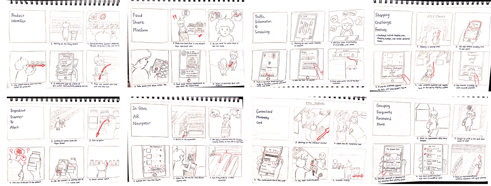

groGo
Developing a mobile application that streamlines in-store grocery shopping experience.
Duration
One semester
Sep 2018 - Jan 2019
Type & Role
Course individual project
Product desginer
Tools
Photoshop
Illustrator
Axure RP
Methodologies
User research
Ideation and brainstorming
Prototyping
User testing
THE PROBLEM
How can I help 92% grocery shoppers save time shopping in the store?
I almost always ended up spending much more time than I wanted shopping in the grocery store.
US shoppers spend an hour per week shopping for groceries (The Time Use Institute, 2008). Considering over 92% of shoppers still shop in the store, something needs to be done to facilitate instore shopping time to give shopers back time lost doing such recurring task (ICSC,2018).
As one of the regretting shoppers myself, I took the challenge to design a solution that streamlines grocery shopping expeirence, giving shoppers back time lost during in-store grocery shopping.
THE PROCESS
From exploring the possibilities to crafting the design
RESEARCH
Explore the unknown about the in-store grocery shopping processes
I started by taking a step back to list down research questions yet to be explore about in-store grocery shopping.
- How much time do people spend a week doing grocery shopping? How do they feel about it?
- What are people's common grocery shopping procedure? What do they spend most time on?
- What do the current solutions offer that solves the problem? What can't they solve?
Small Sample Survey
I conducted a survey with 16 participants to learn their common shopping challenges. I learned that they also spent a long time shopping for grocery. In addition, people who consider spending much time share similar concerns.
In addition, there are recurring issues they mentioned.
- Having to return to previous aisles for a forgotten item.
- Difficulty locating an item in the store.
- Comparing similar items for too long.
User Interviews
I interviewed four different shoppers individually. By having them walk me through their last grocery shopping experience, I uncovered different shoppers' motivations, grocery shopping styles, as well as other pain points related to inefficient shopping.
My husband is vegetarian, so I have to pay extra attention to what I buy.
I have trouble finding a particular item.
Food labels are too small. I spend too much time reading them.
Comparative Analysis
By comparing grocery-store apps and meal-prep apps, I noticed that grocery store apps have less sophisticated planning features, while meal prep apps or to-do list apps rarely include specific product information. The results implied a possible solution that includes the good of both application types.
SYNTHESIS
Summarizing research data to answer my initial quesitons
Now it's time to conceptualize from my research data!
Causal Diagram
What is taking up much time in a grocery shopping process? I synthesized data from the interview and survey, and mapped out the causes in a diagram below. I decided not to tackle the traffic time due to solutions readily available on the market.
Personas
Who am I designing for? After distilling demographic data from the survey and interviews, I identified the primary and secondary personas that would love to optimize their grocery shopping tasks. The personas have distinct shopping behaviors in the store.
Primary persona
Secondary persona
Task flow for both personas
DESIGN GOALS
Create a one-stop solution for in-store grocery shoppers to save them shopping time and money
At this point, the user pain points and market opportunity have been clearer. I have reached three design goals that could address in-store shoppers' challenges.

Saving both time & money
Help shoppers make quick purchase decisions to spend less on grocery.
One platform for all stores
Incorporate data from different grocery brands instead of a single store.
User preference recording
Identify suitable choices for individual shopper to reach dietary goals.
IDEATE
How can I empower in-store shoppers with the capability to make informed purchase decisions without spending much time?
Solution brainstorming
I started to brainstorm as many potential solutions as possible. These include pickup service, hired shopper service, smart shopping cart, digital shelves, and interactive information wall at store. However, none of them completely meets my design goals.
Why mobile app?
In the end, I opted for designing a mobile app to serve in-store shoppers. Not only is a mobile app more accessible during a shopping trip, but itself as a third-party service makes it easier to allow for different store data.
Feature scoping
I initially brainstormed eight possible features for the mobile app. Considering the major goal of the design and time contrainst, I crossed off 'Food Share Platform' and 'Centralize Membership Card' features, and made sure the rest features do help reduce total shopping time.
